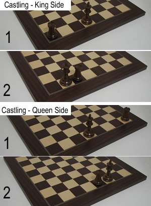

WOLF CREATIONS
The Rules Of Chess
Chess is one of the oldest and most popular board games in the world.
Most Believe the origins of chess begin in either India or Asia many thousands of years ago.
While chess sets have sometimes become fanciful pieces of artwork and decoration bringing elegance to most any home,
chess endures first and foremost as a classic game of skill and strategy,
with nearly limitless combinations and possibilities. Chess is surprisingly easy to learn,
yet can take a lifetime of hard work to master!
Part 1: The Chess Pieces
The King
The King is the most important chess piece on the chessboard. If he is checkmated (see objectives, below) the game is over!
The King can move one space in any direction (see the diagram). He can never move in to "check" (where he is threatened by another piece). This means the king can never be in the space adjacent to the opposing King.
The king can also castle. "Castling" is described in the special moves section below.
The King can move one space in any direction (see the diagram). He can never move in to "check" (where he is threatened by another piece). This means the king can never be in the space adjacent to the opposing King.
The king can also castle. "Castling" is described in the special moves section below.
The Queen
The Queen is often considered the most powerful chess piece on the chessboard.
She is placed next to the king, on her own color. The game is not over when she is lost,
but if your opponent has a Queen and you do not, you may find yourself at a considerable disadvantage!
Like the King, the Queen can move in any direction. However, she is not limited to just one space - she can move any number of spaces in any direction, as long as she is not obstructed by another chess piece (see the diagram) Of course, if that obstruction is an opposing chess piece, she is free to capture it!
Like the King, the Queen can move in any direction. However, she is not limited to just one space - she can move any number of spaces in any direction, as long as she is not obstructed by another chess piece (see the diagram) Of course, if that obstruction is an opposing chess piece, she is free to capture it!

The Bishop
There are two Bishops for each player on the chessboard, situated next to Queen and the King,
respectively. These chess pieces move along the diagonals of the chessboard.
You can see that this means that the Bishop is bound to the color square it starts on.
One Bishop starts on a white square, and one starts on a black square.
They can move any number of spaces on the diagonals as long as they are not obstructed by another chess piece(see the diagram).
Of course, if that obstruction is an opposing chess piece, they are free to capture it!
The Knight
There are two Knights for each player on the chessboard, situated between the Bishop and the Rook.
These chess pieces have the unique trait of being able to 'leap' over other chess pieces.
They move in an "L" shape (see the diagram). If they land on an opposing chess piece, it is captured.
The Rook (sometimes known as The Castle)
There are two Rooks for each player on the chessboard, situated on the corners, next to the Knight.
These chess pieces move up and down the rank and file of the chessboard,
and can move any number of spaces as long as they are not obstructed by another chess piece (see the diagram).
If the obstructing chess piece belong to their opponent, they are free to capture it.

The Pawn
Each player has eight Pawns, providing the first line of defense for their King.
The Pawn has several unique attributes. In their first move,
each pawn has the option to move forward one space or two spaces.
After this move, they can only move one space forward. However, they are also the only chess piece that captures in a method different from how they move.
To capture, the Pawn moves diagonally one space (see the diagram). The Pawn can never move backwards.
The Pawn also has a special move called "En Passant", which you can read about in special moves section below.
If the Pawn reaches the opposite side of the chessboard, it has the unique ability to promote to another chess piece. The pawn can become a Queen, Bishop, Rook, or Knight. There are no restrictions to how many pieces of a given type you can have via promotion.
The Pawn also has a special move called "En Passant", which you can read about in special moves section below.
If the Pawn reaches the opposite side of the chessboard, it has the unique ability to promote to another chess piece. The pawn can become a Queen, Bishop, Rook, or Knight. There are no restrictions to how many pieces of a given type you can have via promotion.
Part 2: The Chess Board and how to set up your Chess Set
A chessboard consists of 64 squares in a checkerboard pattern.
There are light colored squares (referred to as white) and dark colored squares (referred to as black).
There are 8 rows and columns, referred to as the "rank" and "file", respectively. The bottom right corner should be a white square.
Setting up chess sets is fairly straightforward. The chess pieces are set up in an identical manner for both players. The Rooks are at the corners, the Knights are next, and then the Bishops. the middle two pieces are the King and the Queen. Remember, the Queen goes on her color. The entire second rank for each player is occupied by their Pawns.
Setting up chess sets is fairly straightforward. The chess pieces are set up in an identical manner for both players. The Rooks are at the corners, the Knights are next, and then the Bishops. the middle two pieces are the King and the Queen. Remember, the Queen goes on her color. The entire second rank for each player is occupied by their Pawns.
Part 3: The Objective of Chess
The objective in chess is to checkmate your opponents King, and there are three potential ways the game can end:
First, you can checkmate your opponent. This means that the King is in check (under potential attack from an opposing chess piece) and the player can not make any legal move to remove the King from check. At this point, the game is over and the checkmated player loses. The amount of material on the chessboard is of no concern.
Second, you and your opponent can reach a stalemate - the opponents King is not currently in check, but would be force to move in to check with their next move. Because you can never put your own King in check, you would have no legal moves to make. A stalemate does not mean the attacking player has won. Instead, it is a draw - neither player is victorious.
In timed games, each player has a specific amount of time to make their moves. Once their time runs out, they lose, regardless of the material on the board. That means that you could have only your King legt and deftly avoid mate attempts from an opponent with most of their chess pieces still on the chess board and still win the game if your opponent were to run out of time.
First, you can checkmate your opponent. This means that the King is in check (under potential attack from an opposing chess piece) and the player can not make any legal move to remove the King from check. At this point, the game is over and the checkmated player loses. The amount of material on the chessboard is of no concern.
Second, you and your opponent can reach a stalemate - the opponents King is not currently in check, but would be force to move in to check with their next move. Because you can never put your own King in check, you would have no legal moves to make. A stalemate does not mean the attacking player has won. Instead, it is a draw - neither player is victorious.
In timed games, each player has a specific amount of time to make their moves. Once their time runs out, they lose, regardless of the material on the board. That means that you could have only your King legt and deftly avoid mate attempts from an opponent with most of their chess pieces still on the chess board and still win the game if your opponent were to run out of time.
Part 4: Special Moves

Castling
Castling is a special move in chess that involves the King and the Rook.
This is the only situation in which you would move two of your own chess pieces in the same move.
The King and the Rook move towards each other and swap places. To do this, move your King not one,
but two spaces towards the Rook you are castling with.
Then place the Rook on the opposite side of the King (shown in the diagram to the right).
This can be done on either the King side or Queen side, however there are several prerequisites:
The king and rook may not have moved, there must not be any obstructing pieces between them, and the King must not move through check in order to complete the move.
The king and rook may not have moved, there must not be any obstructing pieces between them, and the King must not move through check in order to complete the move.
En Passant
This special move involves the Pawn. As mentioned earlier, this chess piece has the unique ability to move two spaces
for its first move on the chessboard.
Some may use this as an opportunity to avoid capture from an approaching pawn by passing the opposing chess piece with that double move. If this is done, the other player may make an "en passant", or "in passing" capture.
Although the pawn has passed the capture square of the opposing side, that player can move his or her chess piece diagonally, as it does in capture, to the square that the other player had skipped. The pawn that made the double move has been considered captured in passing, and is removed from the chessboard.
Some may use this as an opportunity to avoid capture from an approaching pawn by passing the opposing chess piece with that double move. If this is done, the other player may make an "en passant", or "in passing" capture.
Although the pawn has passed the capture square of the opposing side, that player can move his or her chess piece diagonally, as it does in capture, to the square that the other player had skipped. The pawn that made the double move has been considered captured in passing, and is removed from the chessboard.